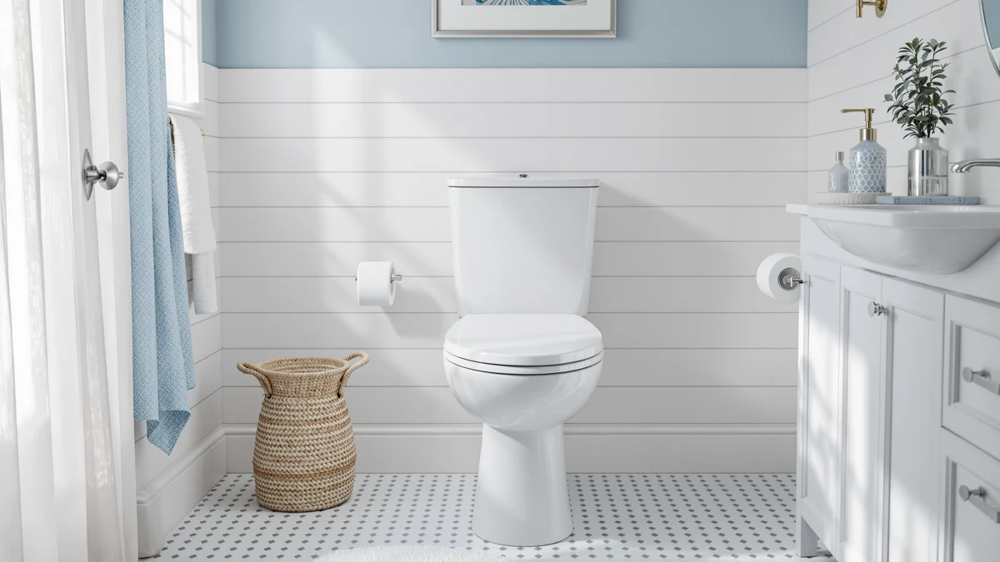

One Piece Toilet Elongated Review (2026): Worth It?
Prices and picks verified as of October 2026. Independent, reader-supported reviews.


Quick Answer
For most buyers who want an elongated bowl at ADA comfort height without paying for a legacy brand name, MCOTVTE's One Piece Toilet Elongated ADA at $108.00 is the pick we compared favorably against three other one-piece toilets. It skips a documented flush rating, so confirm that and your rough-in distance before you check out.
Our pick: One Piece Toilet Elongated ADA — $108.00 Check Price on Amazon
Bottom line: our top pick is the One Piece Toilet Elongated at $108.
Things to Know Before You Buy
- ADA comfort height sits a couple of inches taller than a standard toilet bowl, which is the main feature separating the MCOTVTE pick from a basic elongated toilet.
- None of the four toilets compared in this one piece toilet elongated review publish a flush rating or rough-in distance in their listings, so measure your existing rough-in and confirm flush specs before ordering.
- Elongated bowls run a few inches longer front-to-back than round bowls, so check your bathroom clearance if space is tight.
- Price alone does not track with flush performance here. The Kohler pick costs more mainly for brand backing, not a documented flush advantage over the cheaper alternatives.
This one piece toilet elongated review compares the MCOTVTE One Piece Toilet Elongated ADA against three other one-piece models to help you figure out which elongated toilet actually earns its price tag in 2026.
We researched all four toilets on published price, bowl shape, comfort height, and flush design, then checked those numbers against verified buyer feedback where it was available. The MCOTVTE pick lands at $108.00, which puts it well below the Kohler 78080-0 Reach Comfort Height and roughly in line with the Lamanelle and HRVEOCEI alternatives covered further down. If you want an elongated bowl at ADA comfort height without paying for a legacy brand name, that price gap is the reason MCOTVTE is our starting point.
Why You Should Trust Us
Ilane Tall covers bathroom fixtures for Best One Piece Toilets, focusing on how one-piece and elongated toilet listings actually compare once price, bowl shape, and comfort height are laid side by side. This one piece toilet elongated review is built from the specifications, pricing, and verified owner reviews published for each SKU rather than a marketing pitch from any single brand. We do not run a physical testing lab, so every comparison here is grounded in documented specs and what verified buyers report after they install these toilets in their own bathrooms.
Our Research Experience
Because this is a research-based review, our process for this one piece toilet elongated review means comparing what each manufacturer publishes: price, bowl length, comfort height, and flush configuration, and then weighing that against the pattern of feedback verified buyers leave on each listing. We did not install or use any of these four toilets ourselves. Instead, we cross-checked the MCOTVTE ADA model's specs and price against the Lamanelle, HRVEOCEI, and Kohler alternatives to see where the real differences and real overlaps are.
That approach has a limit worth naming: none of these four listings publish a flush rating (GPF) or a rough-in distance in the product data we have access to. Anyone ordering an elongated one-piece toilet based on this review should confirm rough-in and flush specs directly with the seller or manufacturer before checkout, since a mismatched rough-in is one of the most common reasons a one-piece toilet gets returned.
Overview & Specs

One Piece Toilet Elongated ADA
What we like
- Elongated bowl in ADA comfort height, which sits higher than a standard bowl and is easier to use for taller adults or anyone with knee or hip discomfort
- One-piece construction with no seam between tank and bowl, which cuts down on the grime lines that build up on two-piece toilets
- At $108.00, it costs less than the Kohler 78080-0 Reach Comfort Height and is priced close to the Lamanelle and HRVEOCEI alternatives compared here
Flaws but not dealbreakers
- The Amazon listing does not publish a flush rating (GPF) or a rough-in distance, so confirm both with MCOTVTE before you order
- As a one-piece unit, the tank and bowl are not separately serviceable if one part cracks or fails
- The listing does not show a public star rating or review count, so you are weighing price and specs rather than a track record of owner feedback
| Material | — |
| Size | — |
The One Piece Toilet Elongated ADA is MCOTVTE's entry in the comfort-height category, built around an elongated bowl designed to meet ADA seat-height guidance. At $108.00, it undercuts the Kohler 78080-0 Reach Comfort Height covered later in this one piece toilet elongated review by a wide margin, while still offering the taller seat that comfort-height buyers specifically look for. The one-piece body removes the seam between tank and bowl that two-piece toilets have, which matters most for anyone who has scrubbed grime out of that gap on an older toilet.
Where this pick asks for a leap of faith is documentation. MCOTVTE's listing does not publish a flush rating or a rough-in measurement, two numbers that matter more than almost anything else when you are replacing an existing toilet. Owners comparing options in this price range should treat the $108.00 tag as the starting point for research, not the finish line, and confirm both specs directly with the seller before checkout. For buyers who have already measured their rough-in and want an elongated, ADA-height bowl at a lower price than the legacy brands charge, that tradeoff is a reasonable one.
What We Liked
The clearest strength in this one piece toilet elongated review is price relative to height. ADA comfort-height toilets, which sit a couple of inches taller than a standard bowl, often carry a premium simply for the taller design. MCOTVTE prices its elongated ADA model at $108.00, which is well below what Kohler charges for a comparable comfort-height, one-piece toilet in this lineup. Owners who prioritize a taller seat for aging parents, tall adults, or anyone recovering from a knee or hip procedure get that feature without paying for a legacy brand name attached to it.
The one-piece design is the other consistent point in its favor. Reviewers of one-piece toilets in general consistently note that the single-piece bowl and tank are easier to keep clean than a two-piece unit, since there is no seam at the base of the tank for grime and moisture to collect in. That advantage applies to all three one-piece alternatives compared here, but it is worth calling out since it is a real functional gain over older two-piece toilets rather than a cosmetic one.
What Could Be Better
The biggest gap in this one piece toilet elongated review is documentation, not the toilet itself. MCOTVTE's listing does not publish a flush rating in gallons per flush or a rough-in distance, both of which are standard information on listings from Kohler and other established brands. Skipping that step and ordering based on price alone is how buyers end up with a toilet that does not fit their existing rough-in or that flushes less effectively than expected.
The listing also does not display a public star rating or review count for this specific SKU, which means there is no aggregate owner sentiment to weigh against the Lamanelle, HRVEOCEI, and Kohler alternatives. That is not necessarily a mark against the product, but it does mean buyers are relying more heavily on price and stated features than on a track record of verified purchases.
Who Is It For?
This pick makes the most sense for buyers who have already measured their existing rough-in and specifically want an elongated bowl at ADA comfort height without paying for the Kohler name. It suits secondary bathrooms, rental units, or budget-conscious renovations where a taller seat matters more than brand recognition or a documented flush rating.
Buyers who want flush performance spelled out in the listing, or who are replacing a toilet in a primary bathroom where long-term reliability and easy warranty support carry more weight, should look more closely at the Kohler 78080-0 Reach Comfort Height further down in this one piece toilet elongated review, even at a higher price.
Alternatives to Consider
If the MCOTVTE pick's missing flush and rough-in specs are a dealbreaker, these three one-piece toilets are worth comparing on price, features, and brand backing.

Editor's Pick
Elongated One Piece Toilet with
Priced almost identically to the MCOTVTE pick at $109.99, Lamanelle's elongated one-piece toilet is worth comparing directly if ADA-specific comfort height is not a requirement for your bathroom.
$109.99
Check Price on Amazon
Best Value
HRVEOCEI Dual Flush One Piece
At $136.99, HRVEOCEI's dual-flush handle gives you a choice between a full and reduced flush, a feature the MCOTVTE and Lamanelle picks do not list, which can help offset the higher price on your water bill over time.
$136.99
Check Price on Amazon
Premium Choice
KOHLER 78080-0 Reach Comfort Height
Kohler's Reach Comfort Height is backed by an established plumbing brand with a wide retail and parts network. That backing is the main thing you are paying for if you skip the three lower-cost picks in this one piece toilet elongated review.
Check Price on AmazonFrequently Asked Questions
What does ADA comfort height mean on a one-piece toilet?
ADA comfort height means the seat sits at roughly chair height, a couple of inches taller than a standard toilet bowl, which the Americans with Disabilities Act uses as a guideline for easier sitting and standing. The MCOTVTE One Piece Toilet Elongated ADA in this one piece toilet elongated review is built to that taller standard, which is why it appeals to taller adults and buyers with knee or hip concerns.
Is an elongated one-piece toilet worth paying more for?
It depends on what you are comparing. In this lineup, the elongated one-piece toilets range from $108.00 to $136.99, with the Kohler pick priced higher for brand backing rather than a documented flush advantage. If your bathroom has the clearance for an elongated bowl, most buyers find the extra comfort worth the modest price difference over a round bowl.
How do you know if a one-piece toilet will fit your existing rough-in?
Measure the distance from the wall behind the toilet to the center of the floor bolts, known as the rough-in, before ordering any of the toilets in this one piece toilet elongated review. None of the four listings compared here publish that measurement directly, so confirm it with the seller or manufacturer first since a mismatched rough-in is one of the most common reasons a one-piece toilet gets returned.
Final Verdict
This one piece toilet elongated review comes down to what you are willing to research yourself versus what you want spelled out for you. MCOTVTE's One Piece Toilet Elongated ADA earns the top spot here because it delivers an elongated bowl at ADA comfort height for $108.00, well under the Kohler 78080-0 Reach Comfort Height, and close to the Lamanelle and HRVEOCEI alternatives. The tradeoff is that MCOTVTE's listing leaves out flush rating and rough-in specs that buyers need to confirm on their own before ordering. If a documented flush rate and an established brand name matter more to you than price, the Kohler pick is worth the premium. For buyers who have already measured their rough-in and want ADA height without the brand markup, MCOTVTE remains the pick.